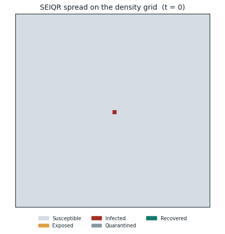

Bayesian modelling, machine learning and scientific computing — statistics that say how sure they are.
I build statistical and machine-learning models, and the software around them, across applied research and independent projects. Most of my current work is at Down Syndrome Education International, on two studies of how children with Down syndrome develop language; alongside it I build independent work in machine learning and scientific computing. The thread through all of it: estimates that carry honest uncertainty, and a clear line between what the data shows and what it only suggests.
Posterior curves with credible bands — the study's shape
01 · About
Statistics people can act on
I build the statistics and the software beneath it: designing models, engineering the data pipelines that feed them, and writing up what the results mean and how much to trust them. Most of that work right now is at Down Syndrome Education International, which researches how children with Down syndrome develop language and turns the findings into guidance families and teachers can use — I joined as a data science and research intern to work on the models behind it.
My background is physics: I'm studying for an MSci in Natural Sciences at UCL, and the habits carry over. Model the process that generates the data, quantify what you don't know, and make the whole analysis reproducible from raw data to final figure. The DSE research shown here was collaborative, developed with DSE's researchers and merged under senior review; the projects further down are independent work of my own.
02 · Approach
How I work
Across research and independent projects I reach for the same toolkit: model the process that generates the data, fit it with full-posterior MCMC so every estimate carries honest uncertainty, use machine learning to surface structure, and wrap the whole thing in reproducible, tested code. What's below is what I've actually shipped and can explain from first principles — not a list of tools I've heard of.
Convergence check from a Bayesian fit: independent MCMC chains agree (R̂ ≈ 1.00), and each estimate is reported as a posterior with a 95% credible interval — not a single number.
Bayesian hierarchical modellingMultilevel models with interpretable priors; study- and child-level random effects.
PyMC & NUTS samplingFull-posterior MCMC via nutpie, gated on R̂, effective sample size and divergences.
Gaussian processesScalable Hilbert-space (HSGP) smooths for age trajectories.
Causal inference & DAGsRandomised effects identified by design; confounded paths reported as association.
Gradient boosting & NLPXGBoost and LightGBM with grouped cross-validation and SHAP; FinBERT for financial-news sentiment.
Scientific computing & simulationVectorised simulations — a spatial epidemic cellular automaton — validated against their analytical limits; ~40× speedups.
Model checking & comparisonPrior and posterior predictive checks; PSIS-LOO and leave-one-study-out cross-validation.
Data engineeringEleven studies harmonised in a DuckDB view, with validation and ceiling guards.
Reproducible pipelinesRaw data → posteriors → figures → report, reproducible at three sampling tiers and tested in CI.
03 · Research
Two studies of language development
The applied-research side of my work, at Down Syndrome Education International. Both are Bayesian analyses reported with full uncertainty, and both are preliminary — the estimates will sharpen as the models are finalised. Each has a plain-language explainer for families and teachers, and a technical one for statisticians.
Study 01 · Vocabulary growth
How children with Down syndrome build vocabulary
A pooled Bayesian study of the words children understand, say and sign, drawing on parent-report checklists from eleven international studies harmonised onto a common scale. The models estimate each growth trajectory as a full probability distribution, so every curve comes with a credible range rather than a single line.
11 international studies · 588 children · ages 8 months – 9½ years · Preliminary findings
Understanding runs years ahead of speaking
The production ratio — the share of understood words a child also says — climbs steeply with age, reaching roughly half by age four and about 88% by seven and a half.
The gap is wider than in typical development, then narrows
At the same level of comprehension, children with Down syndrome say a smaller share of the words they know. The difference peaks at around 13 percentage points at 50–150 understood words and fades as vocabulary grows — a stretch that eases, not a fixed deficit.
Signing offers a modest early bridge
Counting signed words credits children with expressive vocabulary they already have, and narrows the early gap somewhat — real help while speech catches up, though the spoken-word gap stays large.
My contribution
I built the signing and within-child longitudinal models, the multi-study data pipeline that harmonises the eleven datasets in DuckDB, and the descriptive and comprehension–production-gap reports.
The production ratio across age — posterior median with 50/75/90% credible bands.The modelling idea: spoken = understood × production ratio, so speech never exceeds comprehension.
Study 02 · Reading & language
What a reading-and-language intervention actually improved
A re-analysis of the RLI trial (Burgoyne et al., 2012), in which 54 children with Down syndrome were randomly assigned to daily one-to-one reading-and-language teaching or a waiting list. The analysis is built around an explicit causal diagram, so the randomised effect of the teaching stays strictly separate from patterns that merely track a child's general ability.
RLI randomised trial · 54 children · 4 assessment waves · only the randomised effects are causal · Preliminary findings
The teaching credibly improved decoding
Letter-sound knowledge, blending and word reading all rose — and because children were randomised, these effects read as cause, not correlation. The specific words children were taught to say also improved.
Broad vocabulary and grammar did not move
Gains faded with distance from what was taught — a transfer gradient. Skills close to the instruction improved; distant ones didn't. That matches the original trial's own conclusion.
Everything beyond the randomised contrast is association
Where a child starts predicts a lot about where they end up, but which children progress fastest stays confounded with general ability — so it is reported as pattern, never as cause.
My contribution
I helped build the re-analysis, contributing the intention-to-treat and difference-in-differences models inside the study's causal DAG, the gradient-boosting discovery layer that ranks candidate predictors, and the results reporting.
Randomised effects per skill with 95% credible intervals — clear of zero means a credible benefit.The causal design — randomisation identifies the teaching effect; skill-to-skill paths stay association.
04 · Selected projects
Selected projects
Smaller, independent work outside the DSE research — built and validated end to end.
Independent project
S&P 500 stock screener
A two-stage screening pipeline: an XGBoost classifier with triple-barrier labels, trained on ≈1.4 million daily observations across the S&P 500, ranks long and short candidates, and FinBERT scores live news sentiment on the top picks. A Streamlit dashboard adds walk-forward validation and a Monte-Carlo portfolio-risk simulator (VaR / CVaR).
How the screener separates candidates: model confidence vs news sentiment.
Validated by expanding-window walk-forward testing, 2020–2026 · limitations reported: survivorship bias, no transaction costs
A stochastic 2D cellular automaton of epidemic spread across a spatially heterogeneous population, with an interactive dashboard for lockdown and vaccination scenarios. The model began as a UCL group computing project; I extended it individually into the portfolio piece shown here.

One simulated outbreak crossing the grid.
Individual extension: vectorised simulation (~40× faster) · reproducible pipeline, tested in CI (bit-identical results across Python 3.10–3.12) · Streamlit dashboard · validated against the analytical SEIQR ODE
MSci Natural Sciences (Physics), University College London
Research
Down Syndrome Education International — data science & research intern
The research shown here was carried out at Down Syndrome Education International, collaboratively and under senior review; findings from both studies are preliminary and reported with full uncertainty. Figures are drawn from development-tier model fits.